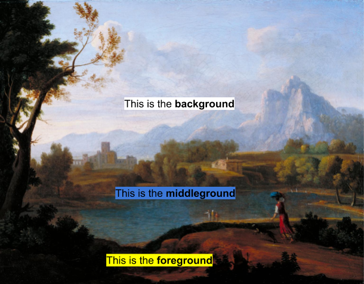

Overview
In this learning activity students load, display and manipulate image files of different formats, changing their placement, size and tint color. They will discuss how tint can be used to create an illusion of depth.

Overview
In this learning activity students load, display and manipulate image files of different formats, changing their placement, size and tint color. They will discuss how tint can be used to create an illusion of depth.
Suggested Duration
45 minutes
Objectives
Students will be able to:
Vocabulary
| Tint | a colored overlay that adjusts the appearance of pictures. (think Instagram filters!) |
|---|---|
| Foreground | elements at the front of a scene |
| Middleground | elements in the middle of a scene |
| Background | elements farthest away in the back of a scene |
Resources
Load an image
In learning activity 3.1, we loaded an image file in preload and then displayed it in draw(). The code looked like this:
In this activity, we are going to play with our image a bit. Just for fun, go find an image of some creature you find in nature - try to find one with a transparent background (most likely this will be a png file). When searching from Google Images, click Tools after your search, then click Colors -> Transparent to filter for images with a transparent background.
Load an image
As we've seen before, the second and third parameters of the image function set its position on the canvas. In the sketch below, instead of drawing our image at the canvas origin as above, we are drawing it at (x,y) = (200, 300). If we were to add a fourth and fifth parameter, so it reads image(tree,200,300,100,200); we would be adjusting the width and height to 100px and 200px respectively.
Before the call to image, we call the tint function. Tint causes the image to be drawn with a color fill, defined by RGB or HSB values depending on the current colorMode. Adding a fourth parameter for the alpha channel we could make the image transparent. In the example below the tint color uses HSB to create a slightly bluer version of our tree:
When we change tint with high saturation and brightness, the results can be very overwhelming - however, if we are more subtle in our adjustments, they can work like Instagram filters and make images look better, or go better together.
An experiment in opacity
Let’s add another tree, and with this one, adjust the opacity. What do you notice?
Using tint to create depth
From an art perspective, any scene you create has a foreground, a middle ground, and a background. Check out this classical example to understand each one:

Generally, the foreground has the warmest, most saturated colors, because you are supposed to feel that it is close. Warm colors tend to be reds and oranges, but sometimes we see this effect with other colors that are just very saturated. The middle ground has colors somewhere in the middle, while the background has the coolest, least saturated colors. Cool colors are generally blues, purples, and greens, but this effect can be achieved with any unsaturated color. While it's not true in this example, sometimes the background might be darker, as well, depending on the scene that is being created.
Create A Forest Scene
Find an image of a tree with a transparent background. Using several for loops, create 'rows' of trees to create a forest scene. Give each row a unique tint so that it creates the illusion of having a foreground, middle ground, and background.
An example of this is shown below:

Challenge Yourself: Improve Your Scene
Can you add the following to your project?